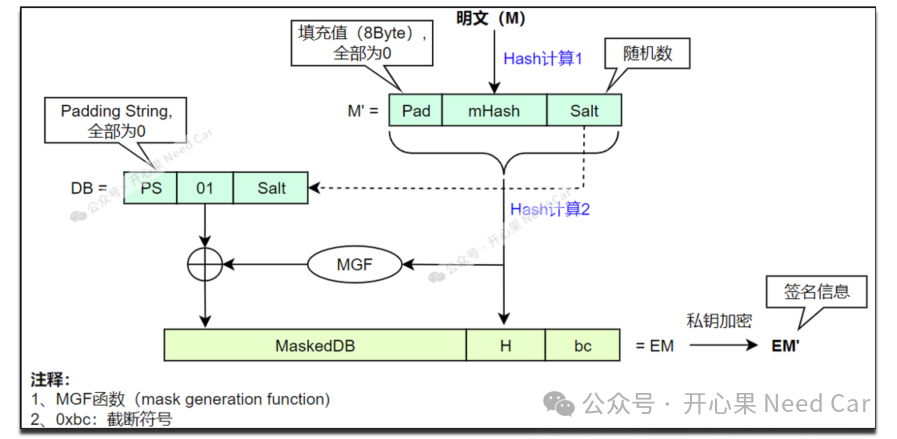

签名与加密应使用各自定义的方案。不要把“私钥加密、公钥解密”当作所有数字签名的通用算法说明；RSA-PSS和RSA-OAEP分别属于签名与加密方案。
RFC 8017，第7、8节开心果 Need Car · 2024-08-23T06:38:00+08:00 · 微信原文
1、RSA填充机制基本概念
PKCS#8：私钥信息语法标准，定义了私钥信息语法和加密私钥语法。
其余PKCS版本信息，感兴趣的朋友可以自行查阅。
对于公钥算法，主流方案是使用《PKCS #1 v2.2: RSA Cryptography Standard, RSA Laboratories, October 27, 2012》。
（一）RFC8017
RFC8017中，支持两种签名填充方案：RSASSA-PKCS1-v1_5和RSASSA-PSS。实际的RSA签名应用中，一般推荐使用RSASSA-PSS填充方案。关于RFC8017，可以参考如下链接：
https://datatracker.ietf.org/doc/html/rfc8017
名词解释：
SSA（Signature Scheme with Appendix）
PSS (Probabilistic Signature Scheme，概率签名方案)是私钥（private key）签名的一种填充方式。
2、PSS模式的RSA签名流程
PSS模式的RSA签名流程如下所示：

具体签名流程，描述如下：
1、对明文（M）进行哈希计算（eg：SHA256），得到mHash；
2、M' = Pad（8 byte全0）|| mHash || Salt；
3、M'进行哈希计算得到H，同时，构造数据块DB = PS || 0x01 || Salt；
4、通过MGF函数，计算H的MGF值，MGF值与DB进行异或操作得到MaskedDB;
5、EM = MaskedDB || H || 0xbc；
如上5步就是RSA-PSS的填充过程。
6、使用私钥对EM进行加密得到签名信息EM'。
其中，盐（Salt）的长度与哈希值长度相等。使用填充机制以后，也就意味着：即使每次对同一个消息进行签名，每次得到的签名信息也会不同，进而增加了对明文的保护。
3、mbedtls库移植
（一）mbedtls下载地址
https://github.com/Mbed-TLS/mbedtls
或者
https://github.com/Mbed-TLS/mbedtls/releases/tag/v2.16.9
（二）ASN.1在线解析地址
对于使用PEM格式存储的密钥，可以使用如下网址解析PEM格式的密钥，链接地址如下：
https://www.the-x.cn/zh-CN/encodings/Asn1.aspx
对于存储密钥的PEM格式，更多细节可以参考RFC1421，链接如下：
往期精彩回顾